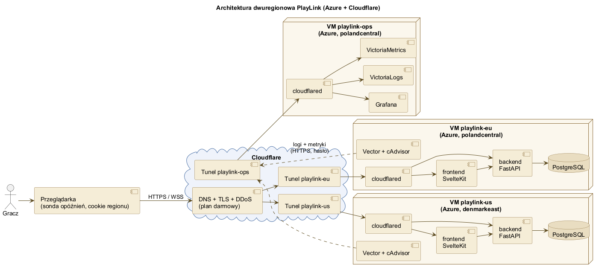
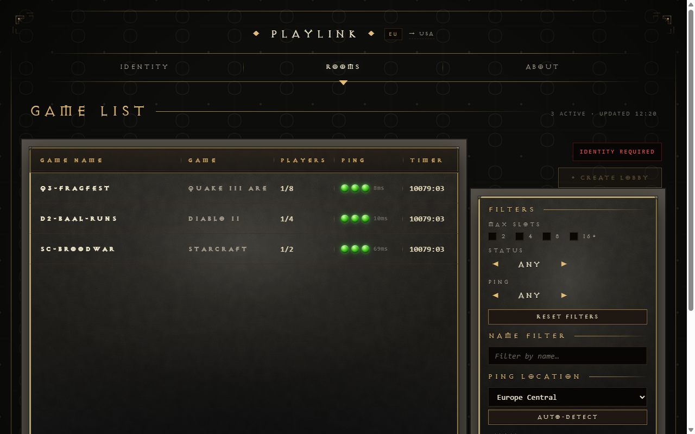
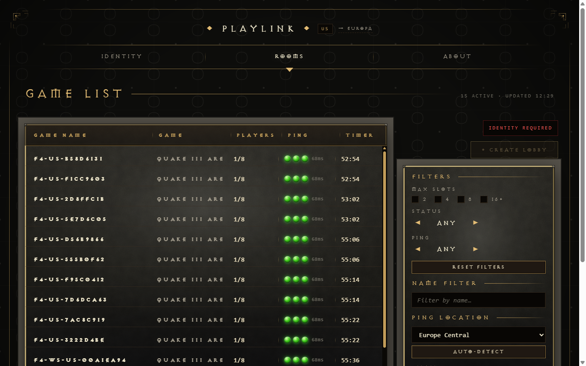
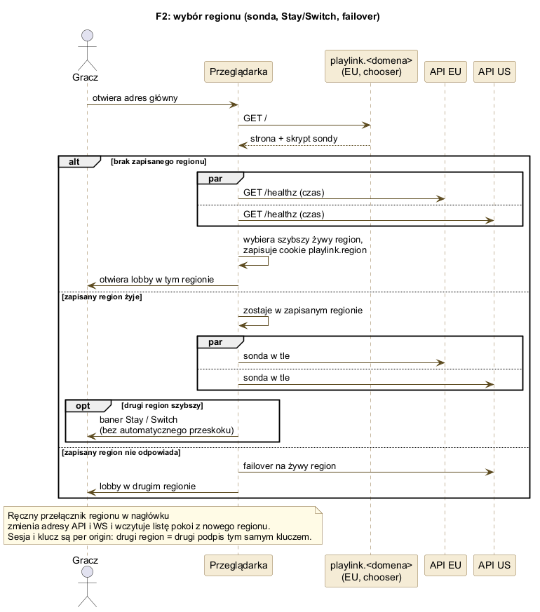
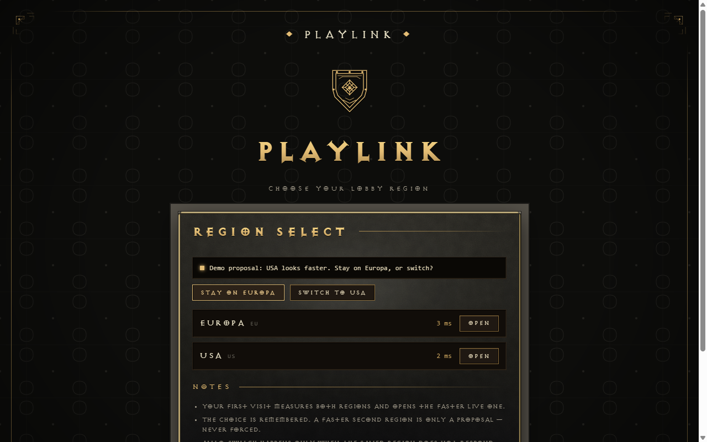
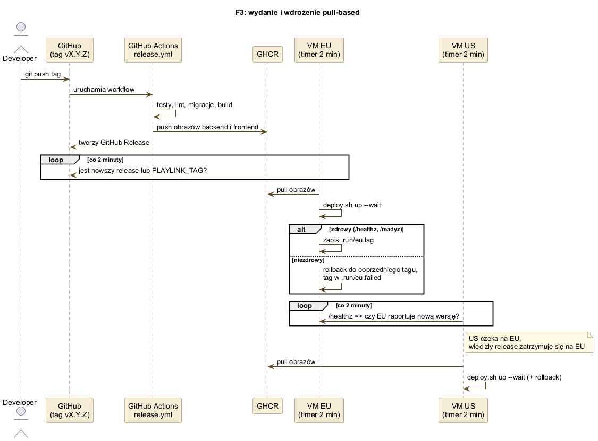
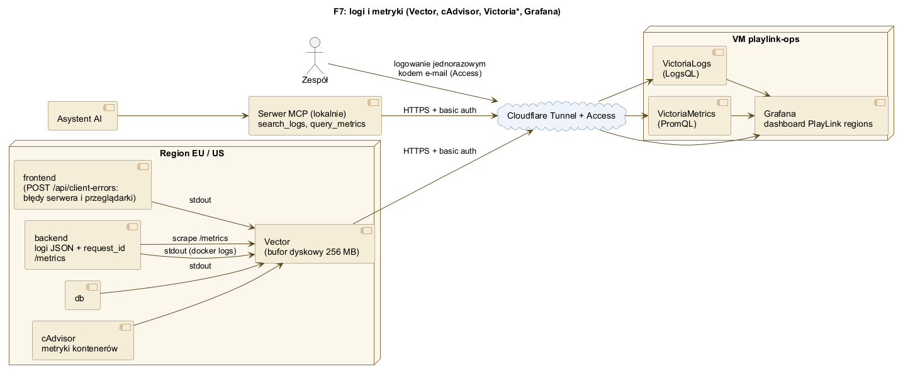
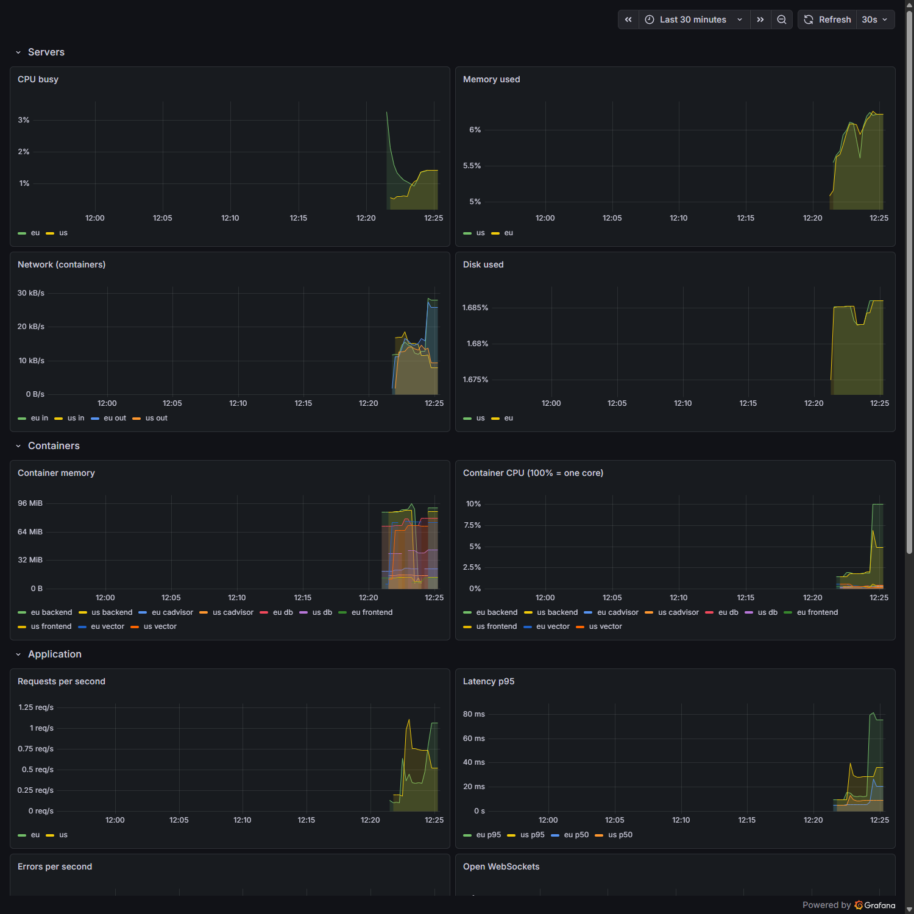
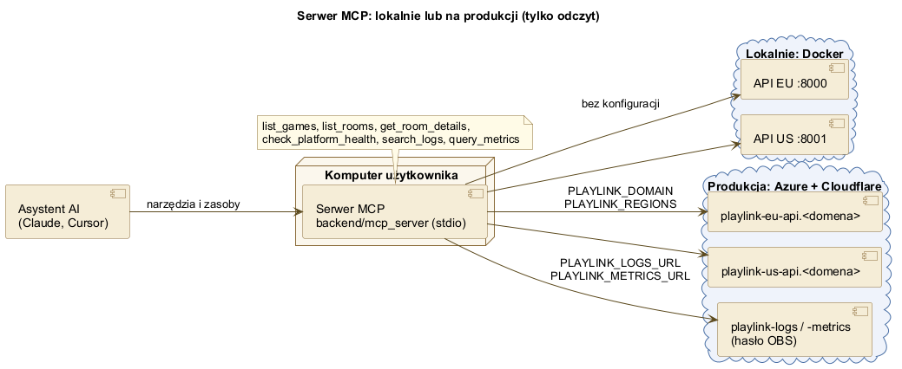

Projekt kompetencyjny IOAD 2026/2027
Lobby dla graczy w dwóch regionach Azure, za tunelem Cloudflare
Bartosz Kołaciński, Mateusz Kosowski, Nikodem Nowak, Natan Ręklewski, Jakub Rosiak, Andrzej Krysiak
Opiekun: mgr inż. Bartłomiej Jencz
18 listopada 2026
PlayLink to aplikacja do szukania graczy (LFG) dla starszych i niszowych gier. Celem było uruchomienie jej w dwóch regionach.
| Filar | Temat | Stan |
|---|---|---|
| F1 | Dwa regiony z lobby | EU i US na Azure za Cloudflare Tunnel, wersja v0.2.0-rc.2 |
| F2 | Wybór regionu | Sonda opóźnień, cookie regionu, baner Stay / Switch, failover |
| F3 | Powtarzalne wdrożenie | Skrypty wdrożenia, wydania w GHCR, aktualizacja pull-based z rollbackiem |
| F4 | Eksperyment 1 vs 2 regiony | Runner z raportami JSON i Markdown |
| F7 | Obserwowalność i MCP | Grafana z logami i metrykami, serwer MCP dla asystentów AI |

Maszyny nie mają otwartych portów, cały ruch wchodzi tunelem Cloudflare.

EU (polandcentral)

US (denmarkeast)
Pokoje i czat są regionalne, tożsamość (klucz z frazy BIP39) jest wspólna. Region „US” stoi w Danii, bo Azure for Students nie ma regionów w USA.

/healthz obu regionów i otwiera szybszyplaylink.region

deploy/deploy.sh eu|us [tag] stawia regiondeploy/azure-vm.sh tworzy maszynę bez otwartych portówv0.2.0-rc.2 wdrożone na EU i US| Scenariusz | A p95 [ms] | B p95 [ms] |
|---|---|---|
| GET /rooms | 24,9 | 18,6 |
| POST /rooms | 80,6 | 58,8 |
| POST /rooms/{name}/join | 56,8 | 49,9 |
| POST /rooms/{name}/leave | 66,0 | 49,9 |
| Czat WebSocket (round-trip) | 56,3 | 24,9 |
| Aktualizacja listy (WS) | 28,0 | 30,0 |
| Autoryzacja (nonce + podpis) | 135,9 | 113,9 |
Przebieg lokalny: 4 użytkowników, 3 iteracje, 0% błędów. A: cały ruch na EU, B: użytkownicy na przemian EU i US.

Vector i cAdvisor w regionach, VictoriaLogs, VictoriaMetrics i Grafana na maszynie ops.

request_id
list_games, list_rooms, get_room_details, check_platform_health, search_logs, query_metrics| Maszyna | Lokalizacja | Rola |
|---|---|---|
playlink-eu | polandcentral | Region EU |
playlink-us | denmarkeast | Region „US” |
playlink-ops | polandcentral | Logi, metryki, Grafana |
Maszyny Standard_B2ats_v2 (2 vCPU, 1 GB RAM), Ubuntu 24.04, bez otwartych portów. Włączane tylko na czas prób i pokazów.
Pytania
github.com/ioad-modul-sumatywny-26/playlink